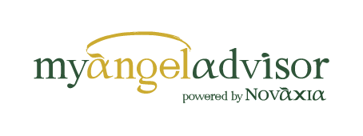
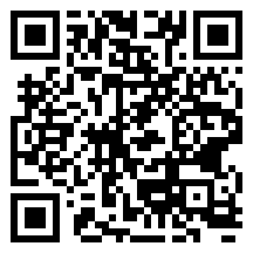

Invitation to joinJoin the myAngelAdvisor Community
myAngelAdvisor is an Elite Professional Network of leading independent advisors, operating within a unified framework and supported by the organisational infrastructure of Novaxia Wealth Advisors. Its purpose is to deliver a truly holistic advisory experience, with a consistent client-facing approach, uncompromising quality standards and clear accountability.
Curated Network
A carefully selected network of distinguished independent professionals.
One-Stop Advisory Experience
A seamless advisory experience for the client, built on coordination, consistency and a shared service philosophy.
Quality & Trust Framework
A trusted collaboration framework with clear standards for quality, confidentiality and risk control.

Express your interest
Scan the QR code or continue directly to the participation form.
Open the interest formΓίνετε μέλος του myAngelAdvisor Community
Το myAngelAdvisor είναι ένα Elite Professional Network ανεξάρτητων κορυφαίων συμβούλων με ενιαίο πλαίσιο λειτουργίας και την οργανωτική υποστήριξη της Novaxia Wealth Advisors. Στόχος είναι η παροχή ολιστικής συμβουλευτικής εμπειρίας, με ενιαία εικόνα προς τον πελάτη, υψηλά πρότυπα ποιότητας και σαφές accountability.
Curated Network
Επιλεγμένος κύκλος κορυφαίων ανεξάρτητων επαγγελματιών.
One-Stop Advisory Experience
Ενιαία συμβουλευτική εμπειρία για τον πελάτη, με συντονισμό και κοινή φιλοσοφία εξυπηρέτησης.
Quality & Trust Framework
Μοντέλο συνεργασίας με σαφή πρότυπα, όρους και πρωτόκολλα, καθώς και μηχανισμούς διασφάλισης ποιότητας, confidentiality και risk control.
Υποβολή ενδιαφέροντος
Σαρώστε το QR code ή μεταβείτε απευθείας στη φόρμα συμμετοχής.
Άνοιγμα φόρμας ενδιαφέροντος